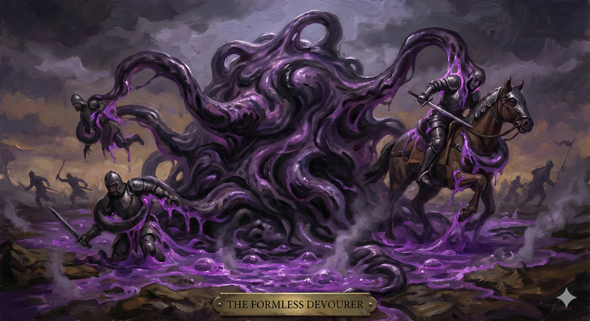

Warlock Patron: The Mimicked
Your patron is a vast, primordial entity of shifting matter. This patron teaches you to use deception and unstable biology to hunt, consume, and survive.

Living Trap
- Sticky Grip. Use Charisma for Grapple checks.
- Reactive Shell. Reaction when damaged: Gain +PB to AC for the round.
Deceptive Feast
- Feigned Form. Cast Alter Self at will.
- Corrosive Bonds. Reaction when you grapple: Expend spell slot to deal 2d8 Acid per slot level and Restrain target.
Consuming Disguise
- Dungeon Sense. Tremorsense 30 ft.
- Impenetrable Form. Immune to effects that force you to revert form. Resistance to Psychic damage while transformed.
Total Transformation
- Formless Devourer. Action: Transform for 1 minute.
— Resistance to B/P/S damage.
— Living Trap: You can grapple any number of creatures without hands. Creatures starting turn within 5ft must save or be Grappled. Grappled creatures take 4d10 Acid per turn.